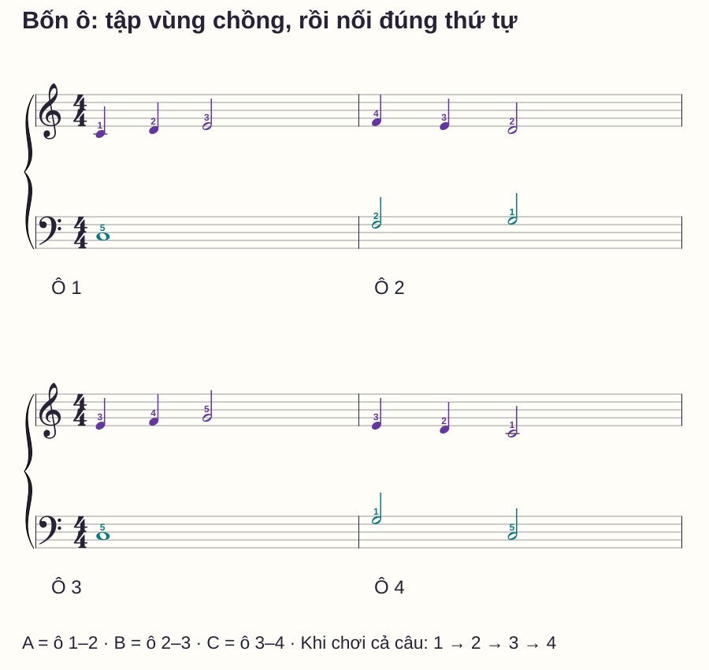
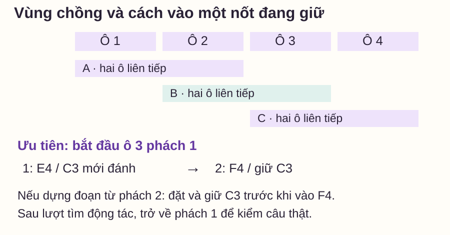

Luyện tập hiệu quả
Chia đoạn luyện piano: sửa chỗ nối bằng đoạn chồng nhau
# Chia đoạn luyện piano: sửa chỗ nối bằng đoạn chồng nhau
Bạn tập ô đầu được, ô sau cũng được, nhưng ghép hai ô lại thì khựng. Nếu mỗi lượt đều kết thúc trước chỗ chuyển, bạn chưa thực sự luyện việc đi qua chỗ đó. Chia nhỏ chỉ hữu ích khi đoạn được chọn chứa đúng nhiệm vụ cần sửa và sau đó được đưa trở lại câu.
Bài này dùng một câu bốn ô để tập ba vùng chồng nhau. Bạn sẽ biết cách chọn điểm đầu, dựng lại nốt đang giữ nếu cần và kiểm đường vào/ra của đoạn. Đây là phần hai loạt Luyện tập và sửa lỗi; bài tìm chỗ kẹt khi ghép tay giúp chọn lỗi cần xử lý trước.
Trả lời nhanh
Chọn đoạn ngắn chứa cả hành động trước lỗi và hành động sau lỗi, thay vì luôn cắt đúng vạch ô nhịp. Sửa đoạn ấy ở tốc độ kiểm soát được, rồi mở rộng bằng một phần trước hoặc sau để các vùng tập có phần chồng nhau. Khi bắt đầu giữa một nốt dài, phải biết nốt đó đang giữ từ đâu; có thể lùi điểm đầu về nơi nó bắt đầu để tránh dựng sai trạng thái. Sau vài lượt sửa có mục tiêu, chơi lại câu đầy đủ và thử bắt đầu từ một điểm khác. Nếu chỉ đoạn nhỏ ổn mà đường nối vẫn dừng, nhiệm vụ nối chưa hoàn thành.
Vì sao lặp một ô chưa sửa được chỗ sang ô sau?
Một lượt kết ở cuối ô 2 không yêu cầu bạn chuẩn bị nốt đầu ô 3. Một lượt bắt từ ô 3 với tay đã đặt sẵn cũng bỏ qua việc tìm thế ấy khi vừa kết ô 2. Cả hai lượt đều đúng nhưng chưa kiểm lần chuyển.
Yamaha — 12 Practice Tips đề cập tập đoạn đích rồi đưa trở lại ngữ cảnh. Trong bài này, “đoạn chồng” là cách tổ chức ví dụ: hai vùng liên tiếp dùng chung một phần câu, để bạn luyện cả chỗ đã sửa và đường nối tới đó. Độ dài phù hợp phụ thuộc nhiệm vụ, không có quy tắc mọi người phải chia đúng hai ô.
Câu bốn ô: đọc đủ trước khi cắt
C4 là Đô giữa, C3 thấp hơn một quãng tám. Chữ C/D/E/F/G tương ứng Đô/Rê/Mi/Fa/Sol. Ngón 1 cái, 2 trỏ, 3 giữa, 4 áp út, 5 út. Tay phải dùng C4–G4; trái dùng C3–G3. Không pedal.

| Ô | Phải: đen, đen, trắng | Ngón phải | Trái | Ngón trái |
|---|---|---|---|---|
| 1 | C4–D4–E4 | 1–2–3 | C3 tròn | 5 |
| 2 | F4–E4–D4 | 4–3–2 | F3 trắng, G3 trắng | 2–1 |
| 3 | E4–F4–G4 | 3–4–5 | C3 tròn | 5 |
| 4 | E4–D4–C4 | 3–2–1 | G3 trắng, C3 trắng | 1–5 |
Ở tay phải mỗi ô, đánh ở 1, 2, 3; giữ nốt trắng qua 4. Tay trái nốt tròn giữ bốn phách, hai nốt trắng lần lượt bắt đầu ở 1 và 3. Cuối câu, giữ C4/C3 tới số 1 của ô tiếp rồi nhả. Không có dấu nối trường độ qua các vạch nhịp trong mẫu.
Từng bước: sửa ranh giới ô 2 sang ô 3
1. Ghi một hành động cần sửa
Ví dụ: “đầu ô 3 phải E4 đúng nhưng trái chưa về C3”. Đây là mục tiêu có vị trí. “Cả bài chưa trôi” quá rộng để chọn một đoạn tập có điểm đầu/cuối rõ.
2. Chọn phần trước và sau điểm chuyển
Lấy ô 2 phách 3–4 → ô 3 phách 1–2. Trên phần này, bắt đầu D4/G3 cùng lúc ở 3, giữ qua 4, đổi E4/C3 ở 1, rồi chỉ phải sang F4 ở 2 trong khi trái giữ C3. Nếu kết thúc đoạn cắt tại số 3 tiếp theo, nhả hai phím đang giữ lúc đó; khi chơi cả câu thì tiếp tục sang G4 phải đúng sheet.
Thử khoảng 50 phách/phút, một click mỗi phách, hoặc chậm hơn nếu chưa đủ thời gian tìm phím. Đếm một ô chuẩn bị, bắt vào số 3 như đã chọn. Lượt tìm vị trí có thể dừng; lượt kiểm đoạn phải đi đều “3–4–1–2”. Thử tối đa ba lượt có đặt lại, sửa một lỗi cụ thể mỗi lần.
3. Mở rộng thành vùng có phần chồng
Chơi A = ô 1–2, B = ô 2–3, C = ô 3–4 như hình. A/B dùng chung ô 2; B/C dùng chung ô 3. Đừng dừng giữa hai ô trong mỗi vùng. Khi từng vùng rõ, nối cả bốn ô để kiểm xem chỗ sửa có còn đứng vững trong câu dài hơn không.
Không cần chạy cả ba vùng nhiều lần nếu chỉ B có vấn đề. Bạn có thể dành phần lớn thời gian cho B, nhưng vẫn cần lượt vào từ A và đi tiếp sang C.
4. Kiểm một điểm bắt đầu khác
Đặt lại rồi bắt trực tiếp từ ô 3. Xác định E4/C3 trước khi đếm chuẩn bị. Nếu bạn chỉ chơi đúng ô 3 khi có ô 1–2 dẫn vào, hãy làm rõ điểm bắt đầu này trước khi tăng tempo.
Cắt vào nốt đang giữ: chọn cách vào có chủ ý

Nếu chọn ô 3 phách 2 làm điểm đầu, F4 phải là nốt mới nhưng C3 trái đã có từ phách 1. Có hai cách tập:
- Ưu tiên lùi về phách 1: chơi E4/C3 rồi đi sang F4/giữ C3. Cách này giữ đúng sự kiện thực trong câu.
- Dựng riêng trạng thái: đặt C3 xuống nhẹ trước lượt vào, tiếp tục giữ khi chơi F4 ở phách 2. Dùng để tìm chuyển động của đoạn nhỏ; âm C3 có thể nghe khác vì được tạo trước lúc vào. Sau đó phải trở về cách thứ nhất để kiểm nhịp và âm nhạc thật.
Không đánh lại C3 ở phách 2 rồi coi đó là đọc đúng bản. Nếu bản có dấu nối, pedal hoặc nhiều bè, còn phải kiểm thêm trạng thái tương ứng; mẫu này chưa có các yếu tố ấy.
Bảng lỗi khi luyện đoạn ngắn
| Biểu hiện | Chỗ thiếu trong cách chia | Sửa ngay |
|---|---|---|
| Trong đoạn đúng, đến đoạn lại dừng | Không tập đường vào | Thêm một phách trước, giữ nguyên tempo |
| Chơi xong đoạn là mất hướng | Không tập đường ra | Thêm một phách sau, rồi nối vùng kế |
| Bắt giữa câu thì đánh lại nốt dài | Không dựng trạng thái giữ | Lùi điểm đầu về lúc nốt đó bắt đầu |
| Một ô chạy tốt, hai ô sai ở vạch | Chỉ lặp các ô tách rời | Chọn 3–4–1–2 chứa chính vạch bị vấp |
| Chạy nhiều lượt nhưng lỗi không đổi | Không ghi hành động cụ thể | Dừng, ghi phách/nốt/giữ/nhả sai rồi chọn lại đoạn |
Routine mười phút và tiêu chí tự kiểm
- 0–2 phút: đọc câu, chọn một lần chuyển và gọi nốt trước/sau.
- 2–4 phút: thử đoạn 3–4–1–2 tối đa ba lượt có đặt lại.
- 4–6 phút: nối vùng B, thêm đường vào/ra ở chỗ còn yếu.
- 6–8 phút: thử cả bốn ô một lượt, ghi lỗi thay vì lập tức chạy lại.
- 8–10 phút: nghỉ ngắn, bắt từ ô 3 rồi kiểm lại đường ô 2→3.
Bạn có thể chuyển mục tiêu khi chơi vùng B đủ thời gian, đi qua ô 2→3 trong câu đầy đủ không chờ, và bắt trực tiếp ô 3 sau đặt lại. Ghi tempo đã thử; không dùng “đã tập đủ ba lần” thay cho việc nghe và quan sát. Nếu vấn đề nằm ở nốt riêng chứ không ở chỗ nối, quay lại bảng tìm lỗi ghép tay.
Câu hỏi thường gặp
Mỗi đoạn nên dài mấy ô?
Đủ ngắn để bạn biết việc cần sửa, nhưng phải chứa lần chuyển đang vấp. Có thể là hai phách hoặc nhiều ô; không cần cố theo một độ dài chung.
Có nên cắt luôn ở vạch ô nhịp không?
Không bắt buộc. Nếu lỗi ở chính vạch nhịp, đoạn chứa cả hai phía thường cho phép kiểm việc chuyển rõ hơn hai ô tập tách biệt.
Đoạn chồng có nghĩa là chơi lặp một ô hai lần trong câu không?
Không. Các vùng A/B/C là những lượt tập riêng có phần nội dung trùng. Khi chơi câu đầy đủ, bạn đi ô 1–2–3–4 một lần theo sheet.
Tôi có nên tăng tốc trước khi nối vùng không?
Hãy kiểm đường nối tại tempo đang kiểm soát trước. Tăng tốc một đoạn đóng kín chưa cho biết bạn có vào và ra đoạn đó đúng trong câu hay không.
Có được nghỉ giữa các lượt không?
Có. Kết thúc lượt, nhả và đặt lại thoải mái. Khoảng nghỉ giữa lượt khác với việc chèn một khoảng chờ không có trong bản khi đang kiểm câu.
Cách này có dùng cho tay trái giữ hợp âm không?
Có thể, nhưng cần biết hợp âm bắt đầu và kết thúc ở đâu, từng nốt có đang giữ không, và pedal có tham gia không. Bắt đầu bằng lùi về điểm vào thật để tránh tự tạo thêm lần đánh.
Nguồn và ghi chú biên soạn
Yamaha — 12 Practice Tips, Stephen Pierce, đối chiếu ngày 27/10/2026 về tập đoạn đích trong ngữ cảnh. Câu bốn ô, vùng chồng, hình điểm vào, lịch và tiêu chí là thiết kế gốc của website; chưa có giáo viên độc lập review hoặc học viên thử nghiệm.